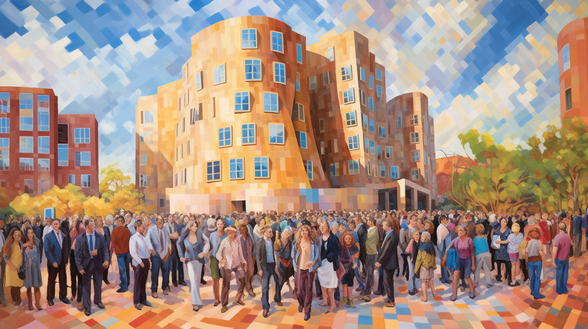
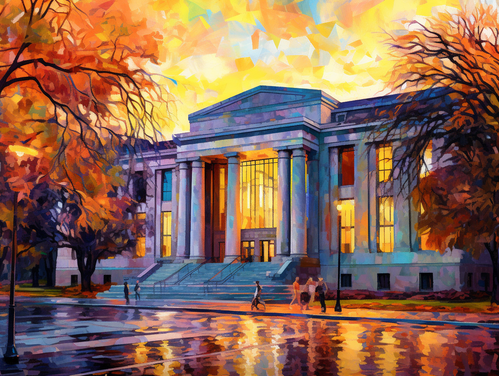
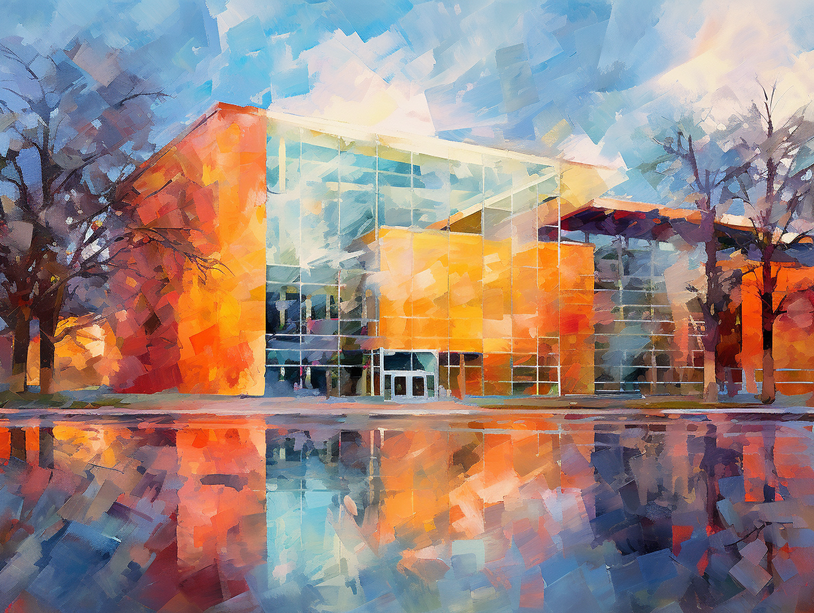
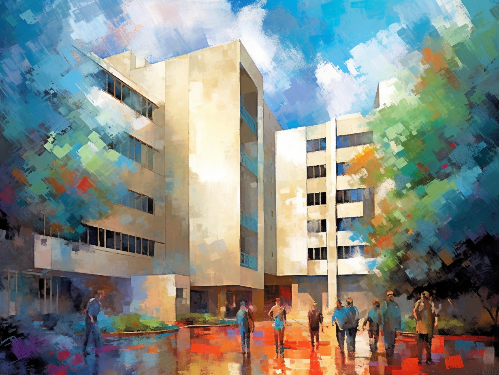
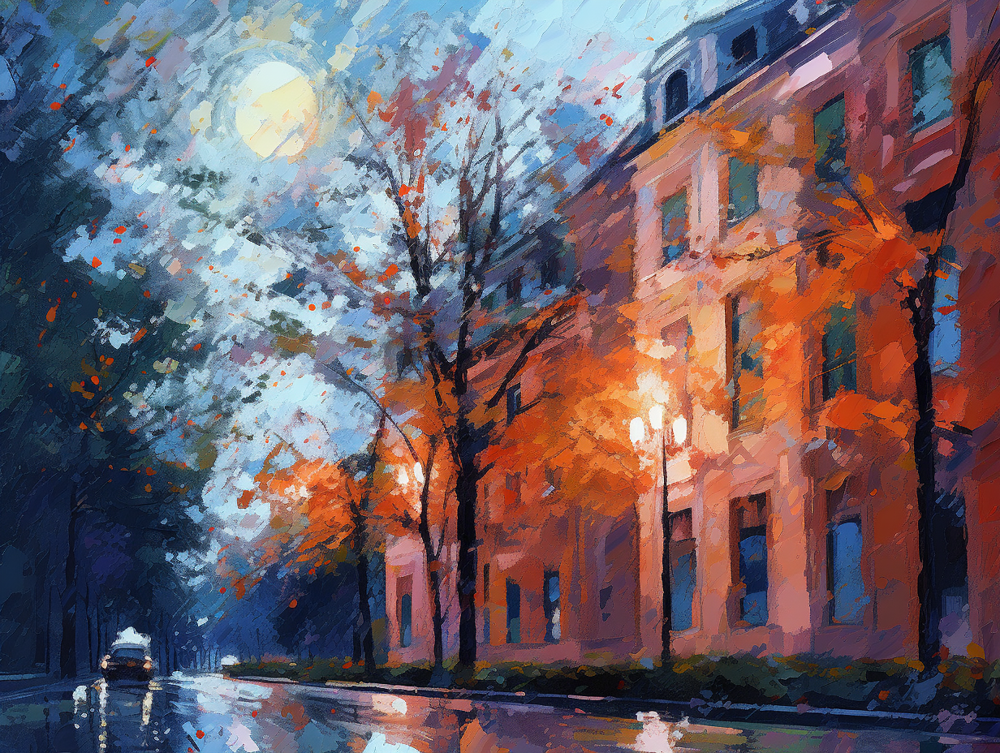

MIT Mechanistic Interpretability Conference 2023

Schedule
Saturday May 6
0800: Breakfast
0900: Overview, LLM MI
- Max Tegmark (MIT): Welcome (video)
- Dylan Hadfield-Menell: interpretability overview (video)
- Chris Olah: The SOTA of LLM Mechanistic Interpretability (video)
Coffee break
- Mor Geva (DeepMind): interpreting LLM’s in embedding space (video)
- David Bau (Northeastern): how LLMs remember facts (video)
Panel with Chris Olah, David Bau & Mor Geva, moderated by Neel Nanda: “What do & don’t we understand about LLMs?” (video)
Lightning intros
1200: Lunch
1300: More LLM MI
- Jacob Andreas/Evan Hernandez: How LLM’s model people’s beliefs (video)
- Ekin Akyürek: How LLM’s can do linear regression at runtime (video)
- Eric Michaud (MIT): Understanding LLM scaling in terms of computational quanta (video)
- János Kramar: compiling any algorithm into a transformer (video)
1420: Group photo
1430: Poster Session
1530: MI beyond LLM
- Tony Wang (MIT): how a human beat AlphaGo (video)
- Ellie Pavlick (Brown): Neural network subroutines (video)
- Ziming Liu (MIT): MI of knowledge representations, symmetry & modularity (video)
- Sharon Li (Wisconsin): How unique are knowledge representations? (video)
- Buck Schlegeris (Redwood): Formalism for thinking about MI (video)
- Martin Wattenberg: Learned world models and what they’re good for (video)
Panel with Ila Fiete (MIT), Tommy Poggio (MIT), Gabriel Kreiman (Harvard): MI inspiration from neuroscience, physics & math (video)
1800-2100: Dinner Cruise, scintillating conversation
Sunday May 7
0800: Breakfast
0900: Morning session: MI for AI safety
- Panel with Viktoriya Krakovna (DeepMind/FLI), Connor Leahy (Conjecture), Sharon Li (Wisconsin), Anthony Aguirre (FLI): AGI Safety (video)
- Neel Nanda (DeepMind): How MI can help AI safety (video)
- Connor Leahy (Conjecture): MI for AGI safety (video)
Coffee break
- Steve Omohundro: Provably safe AGI (video)
- Silviu Marian Udrescu (MIT): Symbolic regression (video)
- Marin Soljacic (MIT): Symbolic regression & applications (video)
1200: Lunch
1300: Lightning talks
1400-1800: Project incubation
- Neel Nanda II: Whirlwind Tour of MI open problems (video)
- Panel with Neel Nanda (DeepMind), Steve Omohundro & Martin Wattenberg (MIT), moderated by Chris Olah (Anthropic): promising MI research directions (video)
- All group leaders looking for collaborators stand up & introduce themselves, lightning style
Coffee break
1515: Project incubator unconference, block I: Break out across different tables in atrium with one MI research direction per table. In parallel, Wes Gurnee & Neel Nanda MIT run MI tutorial hackathon in Singleton Auditorium for whoever wants to get their feet wet.
1615: Project incubator unconference, block II
1715: Report-back from breakouts, closing remarks
1800: Conference dinner, mingling, scintillating conversation
Photos




Organizers
Sponsors